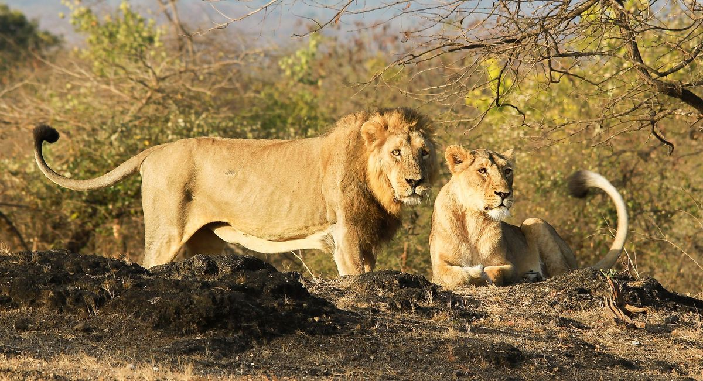

Animals!!!
Animals are categorized into two:
- Domestic Animals
- Wild Animals
Domestic Animals
These are animals that have been tamed kept by humans as a work animal,food source,or pet.They include:
- Donkey
- Cat
- Cows
- Sheep
- Dogs
- Goats
Now let's take a look at some domesticated animals
-
Dogs
Domestic dogs are mostly kept as pets,though many breads are capable of surviving on their own,whether it's a forest or on city streets.
domesticated animals hate but

-
Cats
Domestic cats are characterized by supple low-slung bodies,finely molded heads,long tails that aid in balance, and specialized teeth and claws that adapt them admirably to a life of active hunting.

-
Sheep
Sheep or domestic sheep (Olvis aries) are domesticated,ruminant mammals typically kept as livestock.

Wild Animals
These are mammals,birds,fish, or other of a wild nature endowed with sensation and the power of voluntary motion. Example of wild animals are:
- Lions
- Hyena
- Elephant
- Zebra
-
Lions
The lion is a large cat of the genus Panthera. It has a muscular, broad-chested body, short, rounded head, round ears, and a hairy tuft at the end of its tail.
 -
Hyenas
There are three hyena species — spotted, brown, and striped. Spotted hyenas are the largest of the three. They are fairly large in build and have relatively short torsos with lower hindquarters, and sloping backs. They have excellent night-time vision and hearing.Hyenas have long forelegs and a powerful neck and shoulders for dismembering and carrying prey.

-
Cheetah
A cheetah is a large cat and native to Africa and central Iran. It is the fastest land animal, estimated to be capable of running at 80 to 128 km/h